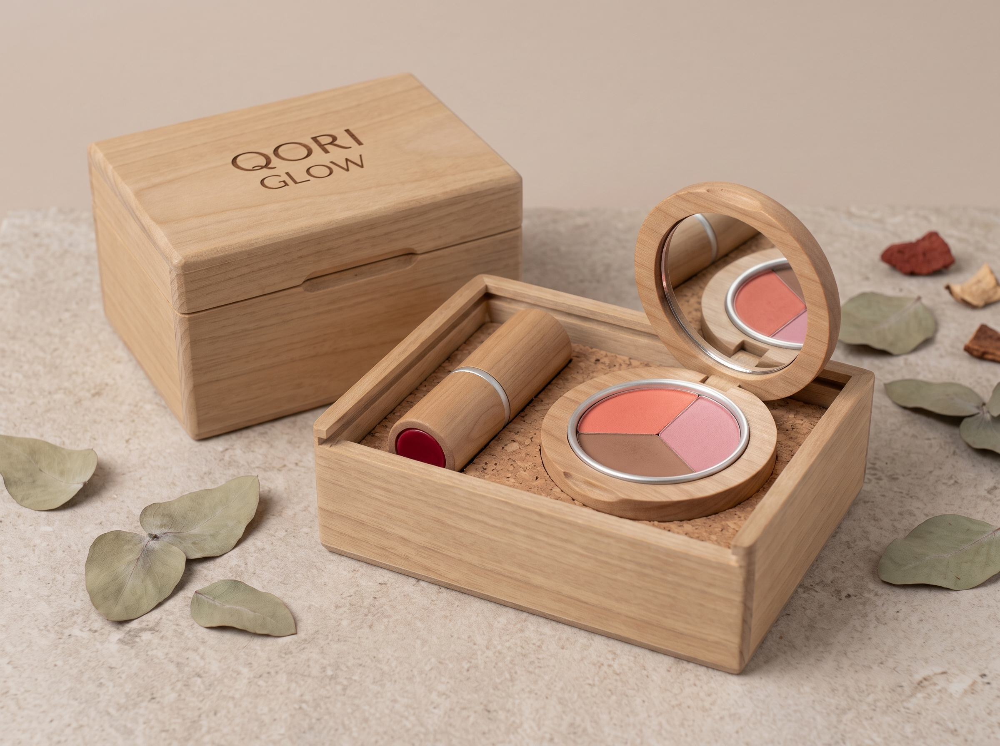

Labial Qori Glow
01Barra de color. Acabado mate o semimate como objetivo de desarrollo.
CONCEBIDO EN PERÚ
Una propuesta de maquillaje que reúne pigmentos naturales, sacha inchi y diseño en madera. Dos productos. Una identidad peruana.

01 / LA COLECCIÓN
Labial en barra y rubor compacto, desarrollados como productos distintos. Explora la propuesta y encuentra tu combinación.
Barra de color. Acabado mate o semimate como objetivo de desarrollo.
Polvo compacto. Una propuesta de pigmentación uniforme y modulable.
Los tonos son referencias visuales de desarrollo. El color en pantalla puede variar; su acabado final se confirmará con muestras.
TU COMBINACIÓN
Reúne un labial y un rubor en una presentación conjunta.
02 / EXPERIENCIA DIGITAL
Explora el labial con una foto o prueba los tonos de labial y rubor con nuestros filtros de Snapchat.
PROBADOR DE LABIAL
Sube una foto de frente y cambia entre los tonos. Es una vista orientativa del concepto Qori Glow.
PRUEBA EN VIVO
En el celular necesitas la app de Snapchat. En computadora verás el Snapcode para abrir el filtro desde tu teléfono.
Elige una opción para comenzar.
Simulación visual de tonos en desarrollo: la luz y la pantalla pueden cambiar el resultado. La foto se procesa en tu dispositivo; no la guardamos ni la enviamos. Necesitas conexión para cargar el filtro.
03 / ORIGEN E INGREDIENTES
Tres insumos distintivos para una colección con identidad propia. Conoce su función propuesta en cada producto.
Beta vulgaris
La propuesta contempla pigmentos o extractos de betarraga como fuente de color en el labial y el rubor. Su forma de suministro y concentración se definirán durante la formulación.
FUNCIÓN PROPUESTA · APORTE DE COLOR
La procedencia y participación de cada insumo se documentarán durante el desarrollo. El origen natural no sustituye las pruebas de seguridad y calidad.
04 / DISEÑO DEL EMPAQUE
Proponemos eucalipto exterior y componentes internos de aluminio. Buscamos que el envase acompañe la experiencia de uso y proteja cada producto.
Eucalipto exterior
Identidad, textura y presencia visual.
Aluminio interior
Componente propuesto en contacto con la fórmula.
Diseño por validar
Mecanismo, acabados, compatibilidad y protección.
La imagen es conceptual. La recarga, la reutilización y los materiales definitivos requieren validación con prototipos.
DE LA IDEA A LA MUESTRA
Ingredientes, fórmula y presentación de cada producto.
Muestras físicas y pruebas de fórmula y empaque.
Calidad, estabilidad y requisitos para comercialización.
Evaluación comercial con compradores en Bolivia.
05 / CONVERSACIÓN COMERCIAL
Si representas a un importador, distribuidor o tienda de belleza, prepara una consulta sobre la colección. Cuéntanos qué buscas.
Descargar el dosier completoLa disponibilidad de muestras, precios y condiciones de distribución se confirmará según el avance del proyecto.
CONSULTA PREPARADA
Revisa el resumen. Puedes descargarlo o copiarlo para compartirlo con el equipo del proyecto. Todavía no se ha enviado.
PREGUNTAS FRECUENTES
Qori Glow es un proyecto académico de desarrollo de productos internacionales. La colección está en desarrollo; esta web permite explorar la propuesta y preparar consultas. No se reciben pagos ni se confirma disponibilidad comercial.
No. La propuesta incluye pigmento procedente de cochinilla, que es de origen animal. Los ingredientes finales y su nomenclatura INCI se definirán con la fórmula.
Puedes incluir ese interés en tu consulta. El equipo deberá confirmar la existencia de muestras, los costos y la posibilidad de envío antes de asumir un compromiso.
Son decisiones que requieren validar el diseño físico. El mecanismo y los materiales definitivos siguen por definir; todavía no se declara recarga ni ausencia total de plástico.
El dosier reúne el concepto de marca, los productos, el empaque y la propuesta de experiencia digital. Descarga el PDF para revisarlo.